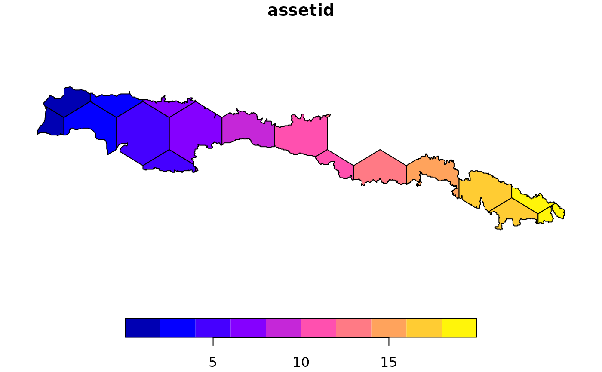

Introduction
In the following we will demonstrate an idealized workflow based on a subset of the ESA Landcover dataset that is delivered together with this package. You can follow along the code snippets below to reproduce the results. Please note that to reduce the time it takes to process this vignette, we will not download any resources from the internet. In a real use case, thus processing time might substantially increase because resources have to be downloaded and real portfolios might be larger than the one created in this example.
This vignette assumes that you have already followed the steps in Installation and have familiarized yourself with the terminology used in the package. If you are unfamiliar with the terminology used here, please head over to the Terminology article to learn about the most important concepts.
The idealized workflow for using mapme.biodiversity consists of the following steps:
- initialize your portfolio using an sf-object containing only geometries of type POLYGON
- decide which indicator(s) you wish to calculate and download the required resource(s)
- conduct your indicator calculation, which adds a nested list column to your portfolio object
- continue your analysis in R or decide to export your results to a GeoPackage to use it with other geospatial software
Getting started
First, we will load the mapme.biodiversity and the sf package for handling spatial vector data. For tabular data handling, we will also load the dplyr and tidyrpackages. Then, we will read an internal GeoPackage which includes the geometry of a protected area in the Dominican Republic from the WDPA database.
library(mapme.biodiversity)
library(sf)
library(dplyr)
library(tidyr)
aoi_path <- system.file("extdata", "sierra_de_neiba_478140.gpkg", package = "mapme.biodiversity")
(aoi <- read_sf(aoi_path))
#> Simple feature collection with 1 feature and 4 fields
#> Geometry type: MULTIPOLYGON
#> Dimension: XY
#> Bounding box: xmin: -71.80933 ymin: 18.57668 xmax: -71.33201 ymax: 18.69931
#> Geodetic CRS: WGS 84
#> # A tibble: 1 × 5
#> WDPAID NAME DESIG_ENG ISO3 geom
#> <dbl> <chr> <chr> <chr> <MULTIPOLYGON [°]>
#> 1 478140 Sierra de Neiba National Park DOM (((-71.76134 18.66333, -71.76067 1…The sf-object contains a single object of geometry type
MULTIPOLYGON. The mapme.biodiversity
package, however, only supports geometries of type POLYGON,
thus we need to cast the geometry before we advance. The resulting sf
object also contains some metadata, that will be retained throughout the
complete workflow. Because some of the cast geometries represent
artefacts of the digitization process, in this example we will subset to
only the largest polygon.
(aoi <- st_cast(aoi, to = "POLYGON")[1, ])
#> Warning in st_cast.sf(aoi, to = "POLYGON"): repeating attributes for all
#> sub-geometries for which they may not be constant
#> Simple feature collection with 1 feature and 4 fields
#> Geometry type: POLYGON
#> Dimension: XY
#> Bounding box: xmin: -71.80933 ymin: 18.57668 xmax: -71.33201 ymax: 18.69931
#> Geodetic CRS: WGS 84
#> # A tibble: 1 × 5
#> WDPAID NAME DESIG_ENG ISO3 geom
#> <dbl> <chr> <chr> <chr> <POLYGON [°]>
#> 1 478140 Sierra de Neiba National Park DOM ((-71.76134 18.66333, -71.76067 18…In the following, we will simulate a portfolio consisting of several
polygons (assets, in the jargon of this package). To this end, we create
smaller polygons within the original extent of the main polygon. This
way, we can showcase the behavior of the
mapme.biodiversity package for portfolios that contain
multiple assets. We will only select single assets with geometry type
POLYGON that lie within the original boundary of the
protected area.
aoi_gridded <- st_make_grid(
x = st_bbox(aoi),
n = c(10, 10),
square = FALSE) %>%
st_intersection(aoi) %>%
st_as_sf() %>%
mutate(geom_type = st_geometry_type(x)) %>%
filter(geom_type == "POLYGON") %>%
select(-geom_type, geom = x) %>%
st_as_sf()
metanames <- names(st_drop_geometry(aoi))
aoi_gridded[metanames] <- st_drop_geometry(aoi)Initialization of a portfolio
Now, we are ready to initiate a portfolio object containing multiple
assets. We use the init_portfolio() function and set some
attributes that are important for the subsequent processing. The
function will add a unique identifier column called ‘assetid’ that is
used to uniquely identify each asset in the portfolio.
# copying package internal resource to a temporary location
outdir <- file.path(tempdir(), "mapme.biodiversity")
dir.create(outdir)
resource_dir <- system.file("res", package = "mapme.biodiversity")
file.copy(resource_dir, outdir, recursive = TRUE)
#> [1] TRUE
sample_portfolio <- init_portfolio(
x = aoi_gridded,
years = 2015,
outdir = file.path(outdir, "res"),
tmpdir = outdir,
add_resources = FALSE,
verbose = TRUE
)
plot(sample_portfolio["assetid"])
The first argument, x, is the sf-object that we want to
turn into a portfolio. The argument years allows us to
restrict our analysis to certain years only. Certain resources with a
temporal dimension are only processed for the portfolio’s temporal
extent. All resource and indicator functions will inform the user if the
portfolio’s temporal extent does not intersect. The outdir
and tmpdir arguments point towards directories on the local
file system of your machine. If these directories do not exist, the
package attempts to create them. The outdir cannot be equal
to the tmpdir argument. All downloaded resources will be
written to respective directories nested within outdir. Any
intermediate files during the calculation of an indicator will be
written to tmpdir. Thus, please ensure that you have write
access to both directories and that there is sufficient free disk space
to support the analysis of your portfolio.
In case your share a common outdir across different
portfolios, the add_resources arguments controls the
behavior of the portfolio initialization. If set to TRUE,
the function will automatically search for resources already available
and add these as attributes to the portfolio. Note, this will be done
without further checking if these resources actually match the
spatio-temporal extent of the supplied portfolio. Only use this if you
are sure that for your current portfolio, all resources have been
downloaded previously. If set to FALSE, no pre-existing
resources will be added to the portfolio. Once you request a specific
portfolio for your resources, only those files will be downloaded that
are missing to match its spatio-temporal extent. This behavior is
beneficial if you share the outdir between different
projects to ensure that only matching resources are returned.
Finally, the verbose logical controls whether or not the
package will print informative messages during the calculations. Note,
that even if set to FALSE, the package will inform users
about any potential errors or warnings.
Getting the right resources
You can check which indicators are available via the
available_indicators() function. For this, we inspect the
names of the returned object:
names(available_indicators())
#> [1] "active_fire_counts" "active_fire_properties"
#> [3] "biome" "deforestation_drivers"
#> [5] "drought_indicator" "ecoregion"
#> [7] "elevation" "fatalities"
#> [9] "landcover" "mangroves_area"
#> [11] "population_count" "precipitation_chirps"
#> [13] "precipitation_wc" "soilproperties"
#> [15] "temperature_max_wc" "temperature_min_wc"
#> [17] "traveltime" "treecover_area"
#> [19] "treecover_area_and_emissions" "treecoverloss_emissions"
#> [21] "tri"Say, we are interested in the landcover indicator. We can learn more about this indicator and its required resources by using either of the commands below or, if you are viewing the online version, head over to the landcover documentation.
?landcover
help(landcover)By inspecting the help page we learned that this indicator requires
the esalandcover resource and it does not require to
specify and further arguments.
With that information at hand, we can start to retrieve the required
resource. We can learn about all available resources using the
available_resources() function:
names(available_resources())
#> [1] "chirps" "esalandcover"
#> [3] "fritz_et_al" "gfw_emissions"
#> [5] "gfw_lossyear" "gfw_treecover"
#> [7] "gmw" "nasa_firms"
#> [9] "nasa_grace" "nasa_srtm"
#> [11] "nelson_et_al" "soilgrids"
#> [13] "teow" "ucdp_ged"
#> [15] "worldclim_max_temperature" "worldclim_min_temperature"
#> [17] "worldclim_precipitation" "worldpop"For the purpose of this vignette, we are going to download the
esalandcover resource. We can get more detailed information
about a given resource, by using either of the commands below to open up
the help page. If you are viewing the online version of this
documentation, you can simply head over to the esalandcover
resource documentation.
?esalandcover
help(esalandcover)We can now make the esalandcover resource available for
our portfolio. We will use a common interface that is used for all
resources, called get_resources(). We have to specify our
portfolio object and the names of the resource(s) we wish to download.
Additional arguments for the specific resource can be specified. The
output of the function is the portfolio object with its attributes
appended for the new resource, thus we simply can overwrite the
sample_portfolio variable.
sample_portfolio <- get_resources(x = sample_portfolio, resources = "esalandcover")
#> Starting process to download resource 'esalandcover'........
#> Checking URLs for existence. This may take a while...
#> Skipping existing files in output directory.In case you want to download more than one resource, you can use the same interface and the resources will be made available sequentially. Required arguments for a resource are simply added as usual:
sample_portfolio <- get_resources(
x = sample_portfolio,
resources = c("esalandcover", "gfw_treecover"),
vers_treecover = "GFC-2021-v1.9"
)Calculate specific indicators
The next step consists of calculating specific indicators. Note that
each indicator requires one or more resources that were made available
via the get_resources() function explained above. Here, we
are going to calculate the landcover indicator which is
based on the esalandcover resource. Since the resource has
been made available in the previous step, we can continue requesting the
calculation of our desired indicator. Note the command below would issue
an error in case a required resource has not been made available via
get_resources() beforehand.
sample_portfolio <- calc_indicators(sample_portfolio, indicators = "landcover")Now let’s take a look at the results. We will select only some of the metadata and the output indicator column to get a clearer picture of what has happened.
(sample_portfolio <- sample_portfolio %>% select(assetid, WDPAID, landcover))
#> Simple feature collection with 20 features and 3 fields
#> Geometry type: POLYGON
#> Dimension: XY
#> Bounding box: xmin: -71.80933 ymin: 18.57668 xmax: -71.33201 ymax: 18.69931
#> Geodetic CRS: WGS 84
#> # A tibble: 20 × 4
#> assetid WDPAID landcover geom
#> <int> <dbl> <list> <POLYGON [°]>
#> 1 1 478140 <tibble [7 × 4]> ((-71.78546 18.658, -71.78546 18.67313, -71…
#> 2 2 478140 <tibble [7 × 4]> ((-71.80292 18.68321, -71.78546 18.67313, -…
#> 3 3 478140 <tibble [7 × 4]> ((-71.76134 18.66333, -71.76067 18.66267, -…
#> 4 4 478140 <tibble [5 × 4]> ((-71.7616 18.69374, -71.7616 18.68691, -71…
#> 5 5 478140 <tibble [7 × 4]> ((-71.73417 18.64352, -71.71386 18.63179, -…
#> 6 6 478140 <tibble [6 × 4]> ((-71.66801 18.63288, -71.69 18.64557, -71.…
#> 7 7 478140 <tibble [6 × 4]> ((-71.71386 18.68865, -71.71386 18.68691, -…
#> 8 8 478140 <tibble [9 × 4]> ((-71.65801 18.68222, -71.66613 18.68691, -…
#> 9 9 478140 <tibble [4 × 4]> ((-71.66613 18.63079, -71.66613 18.62665, -…
#> 10 10 478140 <tibble [9 × 4]> ((-71.63562 18.67697, -71.64227 18.67313, -…
#> 11 11 478140 <tibble [10 × 4]> ((-71.59453 18.66749, -71.59453 18.64815, -…
#> 12 12 478140 <tibble [8 × 4]> ((-71.52294 18.61972, -71.52294 18.63179, -…
#> 13 13 478140 <tibble [3 × 4]> ((-71.54943 18.67465, -71.5468 18.67313, -7…
#> 14 14 478140 <tibble [9 × 4]> ((-71.49535 18.64342, -71.49907 18.64557, -…
#> 15 15 478140 <tibble [8 × 4]> ((-71.46559 18.63735, -71.4752 18.63179, -7…
#> 16 16 478140 <tibble [2 × 4]> ((-71.43534 18.63634, -71.43264 18.63478, -…
#> 17 17 478140 <tibble [9 × 4]> ((-71.42747 18.62066, -71.42747 18.60424, -…
#> 18 18 478140 <tibble [8 × 4]> ((-71.35587 18.582, -71.35587 18.59046, -71…
#> 19 19 478140 <tibble [8 × 4]> ((-71.37974 18.61442, -71.37974 18.60424, -…
#> 20 20 478140 <tibble [6 × 4]> ((-71.34017 18.59953, -71.35587 18.59046, -…We obtained a new listed column in our sf object that is called like the requested indicator. For each asset in our portfolio, this column contains a tibble with variable rows and 4 columns. Let’s have a closer look at one of these objects.
sample_portfolio$landcover[10]
#> [[1]]
#> # A tibble: 9 × 4
#> classes year area percentage
#> <chr> <chr> <dbl> <dbl>
#> 1 shrubs 2015 47.1 0.0341
#> 2 herbaceous_vegetation 2015 262. 0.190
#> 3 closed_forest_evergreen_broad_leaf 2015 190. 0.137
#> 4 closed_forest_deciduous_broad_leaf 2015 1.15 0.000833
#> 5 closed_forest_mixed 2015 117. 0.0849
#> 6 closed_forest_unknown 2015 10.3 0.00749
#> 7 open_forest_evergreen_broad_leaf 2015 201. 0.146
#> 8 open_forest_deciduous_broad_leaf 2015 10.3 0.00749
#> 9 open_forest_unknown 2015 541. 0.392For each asset, the result is a tibble in long format indicating the
absolute area (in ha) and percentage of different landcover types for
the year 2015 (make sure to read the detailed indicator documentation
via ?landcover). Let’s quickly visualize the results for a
single asset. For readability of the plot, we will aggregate several
different types of forest into a single class before:
If you wish to conduct your statistical analysis in R, you can use tidyr functionality to unnest one or multiple columns. Especially for large portfolios, it is usually a good idea to keep the geometry information in a separated variable to keep the size of the data object relatively small.
geometries <- select(sample_portfolio, assetid)
sample_portfolio %>%
st_drop_geometry() %>%
tidyr::unnest(landcover) %>%
filter(assetid == 3)
#> # A tibble: 7 × 6
#> assetid WDPAID classes year area percentage
#> <int> <dbl> <chr> <chr> <dbl> <dbl>
#> 1 3 478140 shrubs 2015 5.75 0.00422
#> 2 3 478140 herbaceous_vegetation 2015 107. 0.0785
#> 3 3 478140 closed_forest_evergreen_broad_leaf 2015 455. 0.334
#> 4 3 478140 closed_forest_mixed 2015 422. 0.310
#> 5 3 478140 closed_forest_unknown 2015 6.90 0.00507
#> 6 3 478140 open_forest_evergreen_broad_leaf 2015 98.8 0.0726
#> 7 3 478140 open_forest_unknown 2015 265. 0.195Enabling parallel computing
{mapme.biodiversity} follows the parallelization paradigm of the {future} package.
That means that you as a user are in the control if and how you would
like to set up parallel processing. Currently,
mapme.biodiversity supports parallel processing on the
asset level of the calc_indicators() function only. We also
currently assume that parallel processing is done on the cores of a
single machine. In future developments, we would like to support
distributed processing. If you are working on a distributed use-cases,
please contact the developers, e.g. via the discussion
board or mail.
To process e.g. 6 assets in parallel and report a progress bar you will have to set up the following in your code:
library(future)
library(progressr)
plan(multisession, workers = 6) # set up parallel plan with 6 concurrent threads
with_progress({
portfolio <- calc_indicators(
sample_portfolio,
indicators = "landcover"
)
})
plan(sequential) # close child processesNote, that the above code uses future::multisession() as
the parallel backend. This backend will resolve the calculation in
multiple background R sessions. You should use that backend if you are
operating on Windows, using R Studio or otherwise are not sure about
which backend to use. In case you are operating on a system that allows
process forking and are not using R Studio, consider using
future::multicore() for more efficient parallel
processing.
Exporting an portfolio object
You can use the write_portfolio() function to save a
processed portfolio object to disk as a GeoPackage. This allows sharing
your data with others who might not be using R, but any other geospatial
software. Simply point towards a non-existing file on your local disk to
write the portfolio. The function will create an individual table for
all processed indicators. Via the read_portfolio()
function, a portfolio which has been written to disk in such a way can
be read back into R. However, users should note that the portfolio-wide
arguments that were set during the portfolio initialization are
not reconstructed (e.g. the temporal extent,
outdir and tmpdir, etc.). Thus if you wish to
continue to use mapme.biodiversity functionality on such
a portfolio object, make sure to re-run init_portfolio() on
it.
tmp_output <- tempfile(fileext = ".gpkg")
write_portfolio(
x = sample_portfolio,
dsn = tmp_output
)
#> Writing layer `metadata' to data source
#> `/tmp/Rtmpgl5AVF/file25a01a0205d3.gpkg' using driver `GPKG'
#> Writing 20 features with 2 fields and geometry type Polygon.
#> Updating layer `landcover' to data source `/tmp/Rtmpgl5AVF/file25a01a0205d3.gpkg' using driver `GPKG'
#> Writing 138 features with 5 fields without geometries.
(portfolio_from_disk <- read_portfolio(tmp_output))
#> Simple feature collection with 20 features and 3 fields
#> Geometry type: POLYGON
#> Dimension: XY
#> Bounding box: xmin: -71.80933 ymin: 18.57668 xmax: -71.33201 ymax: 18.69931
#> Geodetic CRS: WGS 84
#> # A tibble: 20 × 4
#> assetid WDPAID landcover geom
#> <int> <dbl> <list> <POLYGON [°]>
#> 1 1 478140 <tibble [7 × 4]> ((-71.78546 18.658, -71.78546 18.67313, -71…
#> 2 2 478140 <tibble [7 × 4]> ((-71.80292 18.68321, -71.78546 18.67313, -…
#> 3 3 478140 <tibble [7 × 4]> ((-71.76134 18.66333, -71.76067 18.66267, -…
#> 4 4 478140 <tibble [5 × 4]> ((-71.7616 18.69374, -71.7616 18.68691, -71…
#> 5 5 478140 <tibble [7 × 4]> ((-71.73417 18.64352, -71.71386 18.63179, -…
#> 6 6 478140 <tibble [6 × 4]> ((-71.66801 18.63288, -71.69 18.64557, -71.…
#> 7 7 478140 <tibble [6 × 4]> ((-71.71386 18.68865, -71.71386 18.68691, -…
#> 8 8 478140 <tibble [9 × 4]> ((-71.65801 18.68222, -71.66613 18.68691, -…
#> 9 9 478140 <tibble [4 × 4]> ((-71.66613 18.63079, -71.66613 18.62665, -…
#> 10 10 478140 <tibble [9 × 4]> ((-71.63562 18.67697, -71.64227 18.67313, -…
#> 11 11 478140 <tibble [10 × 4]> ((-71.59453 18.66749, -71.59453 18.64815, -…
#> 12 12 478140 <tibble [8 × 4]> ((-71.52294 18.61972, -71.52294 18.63179, -…
#> 13 13 478140 <tibble [3 × 4]> ((-71.54943 18.67465, -71.5468 18.67313, -7…
#> 14 14 478140 <tibble [9 × 4]> ((-71.49535 18.64342, -71.49907 18.64557, -…
#> 15 15 478140 <tibble [8 × 4]> ((-71.46559 18.63735, -71.4752 18.63179, -7…
#> 16 16 478140 <tibble [2 × 4]> ((-71.43534 18.63634, -71.43264 18.63478, -…
#> 17 17 478140 <tibble [9 × 4]> ((-71.42747 18.62066, -71.42747 18.60424, -…
#> 18 18 478140 <tibble [8 × 4]> ((-71.35587 18.582, -71.35587 18.59046, -71…
#> 19 19 478140 <tibble [8 × 4]> ((-71.37974 18.61442, -71.37974 18.60424, -…
#> 20 20 478140 <tibble [6 × 4]> ((-71.34017 18.59953, -71.35587 18.59046, -…